간류 기가스 기스 네간 녹티스
니나 데빌진 드라구노프 라스 럭키 클로에
레오 레이 로우 리차오랑 리디아
리로이 리리 마스터레이븐 머덕 미겔 밥
브라이언 샤오유 샤힌 스티브 아머킹 아스카
아쿠마 안나 알리사 에디 엘리자
요시미츠 자피나 잭-7 조시
줄리아 진 카즈마 카즈야
카타리나 쿠니미츠 쿠마 클라우디오 킹
파캄람 팬더 펭 폴 헤이하치 화랑
캐릭터
3D 대전액션게임 중 캐릭터 볼륨이 압도적으로 높다.
태그 2 콘솔판에서는 플레이어블 캐릭터가 무려 59명에 달한다.
각 게임별로 1탄때부터 이미 철권만 캐릭터 수가 2배였는데,
이는 철권에서 캐릭터별 중간보스라는 전무후무한 시스템을 도입했기 때문이다.
이번 최신작 철권 7에는 총 51명의 플레이어블 캐릭터가 있는데, 그중 카스미, 마스터 레이븐, 샤힌을 비롯한 7 오리지널 캐릭터 11명과
기스 하워드, 고우키 등의 콜라보 캐릭터 4명 - 총 15명의 새로운
캐릭터를 선보였다 (엘리자는 외전인 레볼루션에서 처음 등장했다. 정규 넘버링 시리즈 참전이 7 FR).
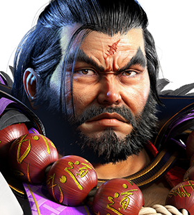
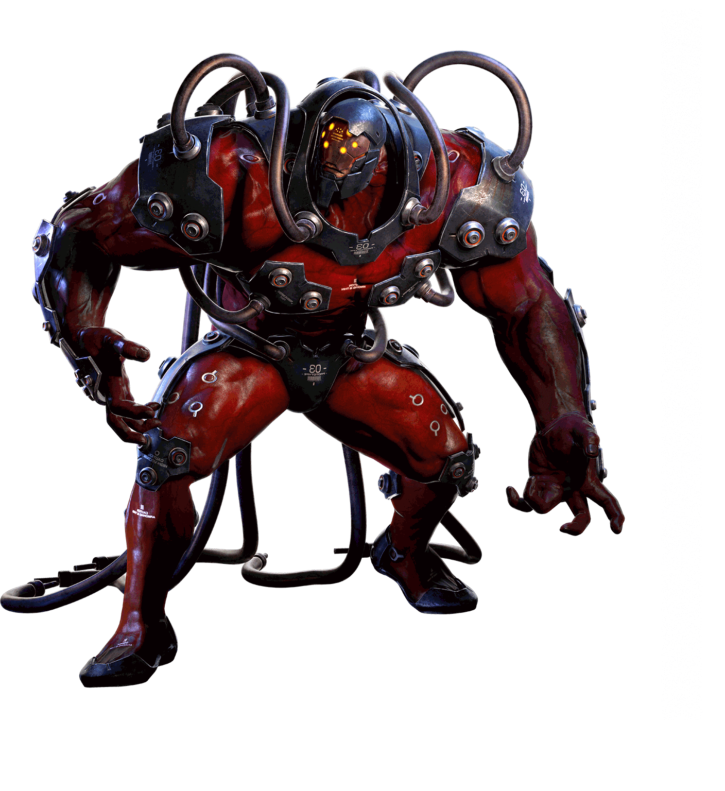
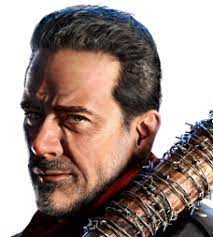
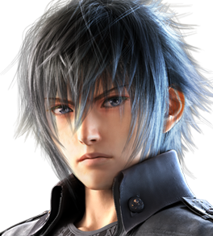
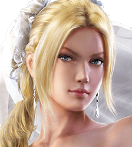
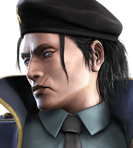
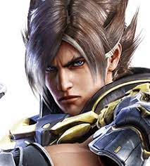
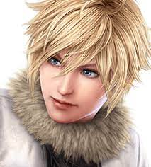
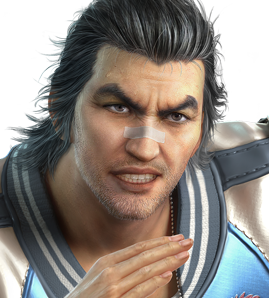
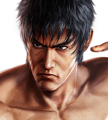
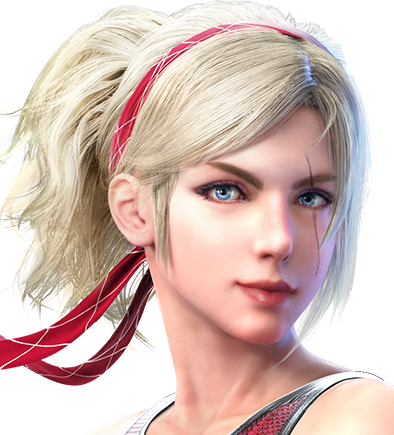
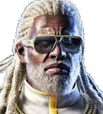
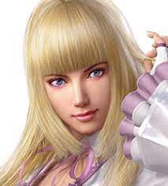